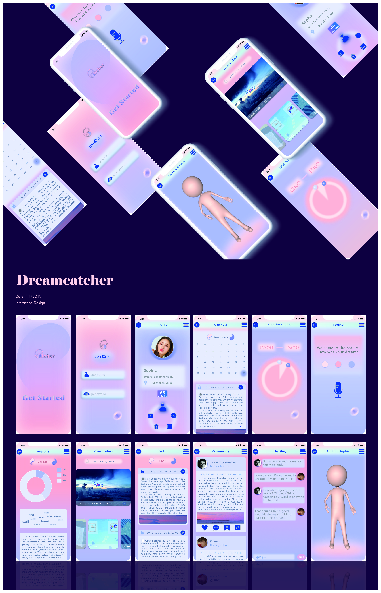

Dreamcatcher

Dreamcatcher
Our dreams always slip by when we are about to wake up, so I have designed this App Dreamcatcher hoping to keep our dreams. There are two special functions of the App, one is dream visualization, through which users can record and simulate the scenes of their dreams, the other one is generating a character of the user in the dream according to user’s record of the dream. I designed the logo with the inspiration from the "Taiji-diagram" of Yin and Yang, meaning the balance between dream and reality. I created the frosted glass effect to present the dreamlike sense and vagueness, implying the borderless dream and the total freedom of it. A circle is always considered a borderless universe, so I also applied circles to indicate the dream without boundary. For the colors I adopted purple and pink, creating dreamy and cozy feelings and making the most comfortable cradle for our dreams.
梦总是在梦醒时分偷偷溜走，由此我设计了Dreamcatcher试图去留住梦。
Dreamcatcher有两个特别的功能：梦境可视化，通过用户的记录去模拟生成梦境中的场景；梦中人,根据用户的记录去形成一个角色，也就是梦境中的自己的样子。Logo的灵感来源是太极图,太极寓意阴阳平衡，我们也可以理解为梦与现实的平衡。用毛玻璃效果去营造模糊的梦幻感，因为模糊所以无边界，失去边界即没有束缚，梦是绝对的自由。圆总被认为是没有边界的宇宙，所以我也使用圆去展现无边界感。紫色和粉色总是永远梦幻迷离的感觉，给予人在云端漂浮的奇妙感受，是梦境诞生最舒适的摇篮。